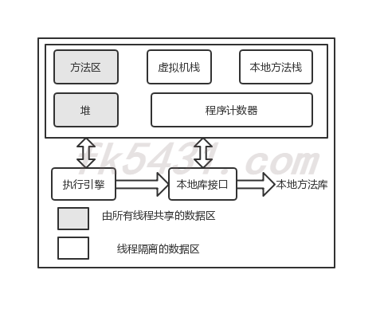

JVM内存区域
Java虚拟机在执行Java程序的过程中会把所管理的内存划分为若干个不同的数据区域。
Java虚拟机所管理的内存将会包括以下几个运行时数据区域（Java虚拟机规范（Java SE7））：

线程隔离的数据区生命周期与线程相同，依赖用户线程的启动/结束。线程共享区随着虚拟机的启动/关闭而创建/销毁。
程序计数器
程序计数器是一块比较小的空间，可以看作是当前线程所执行的字节码的行号指示器。字节码解释器工作时就是通过改变这个计数器的值来选取下一条需要执行的字节码指令，分支、循环、跳转、异常处理、线程恢复等基础功能都需要程序计数器来完成。
如果线程在执行的是一个java方法，这个计数器记录的是正在执行的虚拟机字节码指令的地址；如果是Native方法则为空。
这是唯一一个在Java虚拟机规范中没有规定任何OutOfMemoryError情况的区域。
虚拟机栈
每个方法在执行的时候都会去创建一个栈帧用于存储局部变量表、操作数栈、动态链接、方法出口等信息。每一个方法调用到执行完成就对应着一个栈帧在虚拟机中入栈到出栈的过程。
局部变量存放了编译期可知的各种基本数据类型、对象引用和returnAddress类型（指向了一条字节码指令的地址）。
此区域规定了两种异常状况：如果线程请求的栈深度大于虚拟机栈所允许的深度，将抛出StackOverflowError；如果虚拟机栈可以动态扩展，如果扩展时无法申请到足够的内存，将会抛出OutOfMemoryError异常。

本地方法栈
本地方法栈和虚拟机栈的作用很相似，它们之间的区别是虚拟机栈为虚拟机执行java方法服务，而本地方法栈为虚拟机使用到的Native方法服务。如果一个VM实现使用C-linkage模型支持Native调用，那么该栈将是一个C栈，但HotSpot VM直接把本地方法栈和虚拟机栈合二为一。
与虚拟机栈区域一样，本地方法栈也会抛出StackOverflowError和OutOfMemoryError异常。
java堆
java堆是被所有线程共享的一块区域，在虚拟机启动时创建。几乎所有的对象实例都会在java堆上分配内存。（java虚拟机规范中描述的是：所有对象实例以及数组都要在堆上分配）
Java堆是垃圾收集器管理的主要区域，从内存回收的角度来看，现在的收集器基本采用分代手机算法，所以java堆还可以细分为：新生代和老年代；在细一点有Eden空间、From Survivor空间、To Survivor空间等。
Java堆可以处于物理上不连续的内存空间中，只要逻辑上是连续的即可，就像磁盘空间一样。如果在堆中没有内存完成实例分配，并且堆也无法在扩展时，就是抛出OutOfMemoryError异常。
方法区（永久代）
方法区与Java堆一样，是各个线程共享的内存区域，用于存储已被虚拟机加载的类信息、常量、静态变量、即时编译器编译后的代码等数据。HotSpot VM把GC分代收集扩展至方法区，即使用Java堆的永久代来实现方法区，这样HotSpot的垃圾收集器就可以像管理Java堆一样管理这部分内存，而不用为方法区开发专门的内存管理器。
当方法区无法满足内存分配需求，就是抛出OutOfMemoryError异常。
运行时常量池
运行时常量池是方法区的一部分。Class文件中除了有类的版本、字段、方法、接口等描述符信息外，还有一项信息就是常量池，用于存放编译期生成的各种字面量和符号引用，这部分内容将在类加载后进入方法的运行时常量池中的存放。
当常量池无法再申请到内存时会抛出OutOfMemoryError异常。
直接内存
直接内存不是虚拟机运行时数据的一部分，也不是java虚拟机规范中定义的内存区域。但是这部分内存也频繁被使用，也可能导致OutOfMemoryError异常出现。
在JDK1.4引入的NIO提供了基于通道（Channel）与缓冲区（Buffer）的IO方式，它可以使用Native函数直接分配对外内存，然后通过一个存储在Java堆中的DirectByteBuffer对象座位这块内存的引用进行数据。这样可以在一些场景中显著提升性能，因为避免了在Java堆和Native堆中来回复制数据。